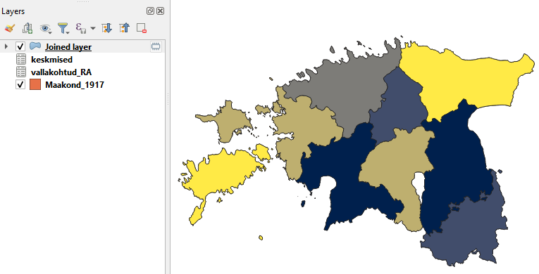

Praktikum 1 Avaandmed ja repositooriumid 2
1.1 Andmestike ühendamine
Kui meil on olemas andmestik, milles ruumilist infot väljendavad ainult mingid tekstilised tunnused (nt riikide, maakondade, linnade, talude vm nimed), saame nende konkreetsete asukohtade määramiseks, kaardil kuvamiseks ning ruumiliseks analüüsimiseks kasutada ära vabalt kättesaadavaid ruumiandmeid (nt Maa-ameti ruumiandmeid).
Vaatame esmalt varasemast oluliselt suuremat 19. sajandi vallakohtute andmestikku. See on osa Rahvusarhiivi ühisloomeprojektist, mille käigus on praeguseks sisestatud üle 40 000 vallakohtuprotokolli, kus arutatakse muuhulgas näiteks laenusid ja võlanõudeid, varavastaseid kuritegusid, pärimisasju, kahjutasunõudeid, aga ka näiteks sõimu ja vägivalda ning muid üleastumisi. Siin praktikumis kasutatavas andmestikus on umbes 25 000 protokolli andmed.
Tabel näeb välja selline:
## id year month day protocol_number
## 1 399 1885 7 19 159
## 2 182 1823 5 19 NULL
## 3 508 1856 2 17 4
## 4 249 1869 3 11 66
## 5 533 1843 3 27 NULL
## 6 583 1899 7 2 2
## X_record_type maakond
## 1 Maade ja hoonete rentimine, mõõtmine ja pärandamine. Ehitamine. Suhted mõisa ja kroonuga. Pärnu
## 2 NULL Viljandi
## 3 NULL Tartu
## 4 Laenud ja võlanõuded Viljandi
## 5 Perekonna- ja pärimisasjad Viljandi
## 6 Varalised tehingud; Maade ja hoonete rentimine, mõõtmine ja pärandamine. Ehitamine. Suhted mõisa ja kroonuga. Harju
## kihelkond vald number_of_characters
## 1 Halliste Penuja 409
## 2 Helme Lõve 84
## 3 Kodavere Alatskivi 211
## 4 Helme Lõve 60
## 5 Paistu Holstre 348
## 6 Kose Palvere 4025Selleks, et protokollide andmeid kaardil kuvada, ühendame Maa-ameti maakonnapiiride andmed vallakohtute andmetega.
Esmalt laadime mõlemad andmestikud QGISi.
- Maa-ameti andmed laadime vektorkihina: Layer -> Add Layer -> Add Vector Layer -> [vali SHP-fail] -> Add -> Close
- Vallakohtute andmed laadime csv-kihina: Layer -> Add Layer -> Add Delimited Text Layer -> [vali fail vallakohtud_RA.csv] -> tulpade eraldaja on tabulaator (Tab), linnuke on kastide ees First record has field names ja Detect field types, Geometry Definition on No geometry -> Add -> Close
Selleks, et tavalist andmestikku ruumiandmetega ühendada, peab kahel andmestikul olema vähemalt üks ühine tunnus (näiteks tulp maakonnanimedega). Millised on vallakohtute maakonnanimed ja millised Maa-ameti maakonnapiiride maakonnanimed? Vaatame atribuuttabelist.
Asendame Maa-ameti maakonnapiiride atribuuttabelis maakonnanimed nii, et need ühtiksid vallakohtute andmetega (nt Viljandi maakond -> Viljandi). Selleks lisame tabelisse uue tulba nagu eelmiselgi korral. Tee paremklikk maakonnapiiride kihil -> Properties -> Fields -> Field calculator -> Create new field ning kasutame regulaaravaldist, mis kustutab pärast maakonnanime osa " maakond" (teisisõnu: asendab selle osa mitte millegagi). \\s märgib siin tühikut.
Figure 1.1: Maakonnanimede asendamine regulaaravaldise abil
Nüüd on meil tunnus MNIMI2, mille abil saame kaht andmestikku ühendada. Ühendamiseks on aga kaks viisi.
- Esiteks võime ühendada csv-tabeli shapefile’iga. Sellisel juhul säilib shapefile’i struktuur, milles on 15 rida (iga maakonna kohta üks) ning csv-failist lisatakse igale reale ainult mingid keskmised näitajad. Võime siin näiteks ühendada shapefile’iga iga maakonna protokollide keskmise pikkuse tähemärkides.
- Teiseks võime ühendada shapefile’i ruumiinfo csv-tabeliga. Sellisel juhul säilib csv-faili struktuur, milles on üle 25 000 rea (iga protokolli kohta üks) ning iga rida saab juurde koordinaadid. Võime siin näiteks ühendada csv-failiga iga maakonna keskpunkti (tsentroidi) koordinaadid.
1.1.1 CSV info ühendamine SHP-ga
- Esmalt on meil vaja CSV-tabelist saada tabel, kus oleks iga maakonna kohta protokollide keskmine pikkus tähemärkides. Selleks saame luua näiteks uue virtuaalse kihi ning kasutada SQL-i päringut. Mine Layer -> Create Layer -> New Virtual Layer, nimeta kiht nt keskmised, Embedded layers saki alt vali Import ning impordi kiht vallakohtud_RA. Sisesta Query väljale pildil näidatud SQL-i päring ning vajuta Add.

Figure 1.2: Virtuaalse kihi loomine
- Tee nüüd maakonna kihist duplikaat: paremklikk kihil -> Duplicate Layer.
- Kuna vallakohtute andmestikus on kahe Viru maakonna (Ida-Viru ja Lääne-Viru) asemel lihtsalt üks Virumaa, siis ühendame maakonna kihi duplikaadis Ida- ja Lääne-Viru polügoonid üheks. Selleks
- tee duplikaadi kiht aktiivseks ning mine muutmise režiimi (Edit, vajuta kollasel pliiatsil);
- vajuta valiku tööriista (Select) ning Ctrl-klahvi all hoides vali Ida- ja Lääne-Virumaa polügoonid;
- vali menüüs Edit -> Merge selected polygons, jälgi, et nii MNIMI kui ka MNIMI2 tulpadel oleks Id Manual value ning määra ühendatud kihile tulba MNIMI väärtuseks Viru maakond ning tulba MNIMI2 väärtuseks Viru. Juhul, kui atribuuttabelisse jääb endiselt väärtus Lääne-Viru või Ida-Viru, muuda see käsitsi atribuuttabelis ära (muutmiseks vajuta atribuuttabelis kollasel pliiatsil ning muutmise lõpetamiseks uuesti kollasel pliiatsil). Lõplikus atribuuttabelis peaks olema ainult Viru ja Viru maakond.
Figure 1.3: Virumaa polügoonide ühendamine
Figure 1.4: Atribuuttabeli parandamine
- Salvesta kihi muudatused (Save layer edits) ning välju muutmise režiimist (vajuta uuesti kollasel pliiatsil).
- tee duplikaadi kiht aktiivseks ning mine muutmise režiimi (Edit, vajuta kollasel pliiatsil);
- Nüüd saame ühendada kihi keskmised ja maakonnapiiride kihi koopia. Selleks tee paremklikk maakonnapiiride kihi koopial -> Properties -> Joins -> lisa rohelisest plussmärgist uus ühendamine, täida väljad nii nagu allpool oleval pildil ning vajuta OK ja uuesti OK.
Figure 1.5: Andmestike ühendamine (1)
- Nüüd on meil maakonnapiiride kiht, mille atribuuttabelis on ka infot selle kohta, kui pikad vastava maakonna vallakohtuprotokollid keskmiselt on. Kasuta seda tulpa selleks, et värvida maakonnad eri tooni (pikemate protokollidega maakonnad tumedamalt, lühematega heledamalt). Selleks kasuta juba eelmistes praktikumides näidatud viise (Symbology -> Graduated jne).
Figure 1.6: Ühendatud andmestikud
1.1.2 SHP info ühendamine CSV-ga
- Ühendame nüüd csv-failiga iga maakonna keskpunkti (tsentroidi) koordinaadid. Selleks tuleb meil esmalt leida maakondade polügoonide keskpunktid. Tee uus maakonnapiiride kihi koopia (duplikaat) ning nimeta see nt maakonnad2 (paremklikk kihil -> Rename Layer).
- Tee kiht maakonnad2 aktiivseks -> Vector -> Geometry Tools -> Centroids… -> jäta vaikeväärtused ning vajuta Run. Maakondade kihile ilmuvad nüüd uuel kihil polügoonide keskpunktid.

Figure 1.7: Polügoonide keskpunktide leidmine
- Järgmiseks lisame kihi Centroids atribuuttabelisse punktide x- ja y-koordinaadid: tee kiht aktiivseks -> Vector -> Geometry Tools -> Add Geometry Attributes, jäta jällegi vaikeväärtused ning vajuta Run ja Close. Tekkis uus kiht Added geom info. Nimetame selle ümber nt koord_keskpunktid.
- Ühendame nüüd CSV-kihi maakondade nimede järgi keskpunktide koordinaatide kihiga. Tee paremklikk kihil vallakohtud_RA -> Properties -> Joins -> Add new join
Figure 1.8: Andmestike ühendamine (2)
- Salvestame kihi vallakohtud_RA uue CSV-failina (paremklikk -> Export -> Save features as). Jälgi, et kodeering oleks UTF-8, väljade eraldaja (SEPARATOR) oleks tabulaator ning koordinaatsüsteem EPSG:3301.

Figure 1.9: Koordinaatidega csv-faili salvestamine
- Nüüd loeme salvestatud faili uuesti csv-failina sisse nii, et määrame ära koordinaatide tulbad: Layer -> Add Layer -> Add Delimited Text Layer
Figure 1.10: Koordinaatidega csv-faili sisselugemine
- Nüüd on meil kaardil üksteise all igas maakonnas sadu ja tuhandeid punkte, ehkki vaikimisi näeme, et igas maakonnas on ainult üks punkt. Selleks, et protokollide jaotumist visuaalselt veidi paremini näidata, võime näiteks filtreerida välja ainult protokollid, mille teemaks on (ainult) “Sõim ja vägivald” ning teha heatmap’i.

Figure 1.11: Heatmap
Võid proovida teha sama kihelkondade andmetega, kasutades näiteks siit alla laaditavaid 1897. aasta kihelkonnapiiride andmeid. NB! Kihelkondade andmestikus on mõned polügoonid, mille ruumikuju on vigane ja millel seetõttu ei saa nende puhul näiteks keskpunkte leida. Selleks, et see segama ei hakkaks, määra QGISis Settings -> Options -> Processing -> General menu -> Invalid features filtering (= Skip (ignore) invalid geometries).
1.2 Geokodeerimine
Täpsemate asukohtade määramiseks (nt aadresside jaoks) saab kasutada geokodeerimise teenust. Geokodeerimine on aadressi või kohanime seostamine geograafiliste koordinaatidega. Tagurpidi geokodeerimine omakorda võimaldab koordinaatidest tuletada aadressid ja kohanimed.
Maa-amet pakub tasuta geokodeerimise teenust. Sealjuures on võimalik geokodeerida ainult üht aadressi/kohta korraga kui ka tervet hulka andmeid (massgeokodeerimine).
Geokodeeri alustuseks näiteks enda, oma sõbra, vanemate vt aadress. Saad väljundit kuvada nii aadressiobjektide kaardirakendused kui ka alla erinevates formaatides alla laadida. Kas jääd tulemuse täpsusega rahule?
Massgeokodeerimise sisendiks sobivad CSV-, XLS- või XLSX-formaadis andmetabelid. CSV-formaadi puhul peab välju eraldama semikoolon. Vaatame seda lühikese näite abil, kus geokodeerime Tartu Ülikooli valdkondade ametlikud aadressid.
- Kodeerimisel pead ära määrama, millises tulbas paikneb lähteaadress, mida geokodeerima hakatakse. Antud juhul on selleks tulp Aadress.
- Seejärel saad valida,
- kas tahad aadresse lihtsalt normaliseerida (st viia kujule, milles need esinevad nt kohanimeregistris), ilma et saaksid aadressidele koordinaadid;
- milliste objektide hulgast vasteid otsitakse. Meid huvitavad siin eeskätt õppehooned, aga veidi ebatäpsemate aadresside puhul (talud, tänavad, maakonnad, linnad jne) tasub otsida ka teiste objektide seast;
- kas tahad, et andmeid töödeldaks sünkroonselt, mispuhul saad protsessi jälgida kohe samas veebilehitseja aknas, või asünkroonselt, mispuhul andmed laetakse serverisse ning kasutajale saadetakse mõne aja pärast tulemus meilile. Viimast tasub teha eeskätt siis, kui andmestik on mahukas.
- milliseid ruumiandmete tulpasid väljundisse soovid (nt kas kõiki aadressiobjektide id-sid ja tasemeid);
- kuidas vasteid esitatakse. Eeskätt puudutab see aadresse, millel on kas mitu vastet või millele täpset vastet ei leita.

Figure 1.12: Massgeokodeerimine (2)
Geokodeerimine töötab väga hästi tänapäevaste aadressidega.
Vaatame aga nüüd ka natuke vanemaid andmeid, nimelt Rahvusarhiivi kaudu kasutatavat Tartu Ülikooli ja Eesti Ajalooarhiivi andmebaasi “Album Academicum 1918–1944”, mis koondab matrikliraamatutele jt allikatele tuginedes infot Tartu Ülikooli immatrikuleeritud üliõpilastest aastatel 1918-1944 (vaata lähemalt). Kuna andmestik ise on üpris mahukas, sisaldades infot enam kui 20 000 tudengi kohta, siis vaatame siin ainult kahe väga levinud perekonnanimega (Tamm ja Saar) üliõpilaste andmeid ning võrdleme nende perekonnanimedega üliõpilaste päritolu. Naisüliõpilaste andmete puhul ei pruugi võrdlus olla väga täpne, kuna andmestikus sisalduvad ka need kirjed, kus Tamm või Saar on saadud perekonnanimeks abiellumisel.
Oleme veidi algandmestikku täiendanud ning lisanud standardiseeritud sünnikoha tulba, kus andmebaasis kajastatud sünnikohtadel on lühendid lahti kirjutatud ning erinevate tasemete vahele on lisatud komad.
## Matrikli.Nr. Eesnimi Perenimi Isanimi Isa.tegevusala Sünniaeg Sünnikoht Sünnikoht_std
## 1 120 Alide Tamm Jakob põllumees 20.01.1897 Võ Vana-Roosa v Võrumaa, Vana-Roosa vald
## 2 129 Alexander (Aleksander) Tamm Jaan Puudub 20.11.1896 Põltsamaa Põltsamaa
## 3 172 Andres Tamm Hans põllumees 22.09.1895 Vil Tarvastu v Viljandimaa, Tarvastu vald
## 4 207 Ann Tamm Jaan metsavaht 22.12.1890 Pä Karksi v Pärnumaa, Karksi vald
## 5 407 Alfred Tamm Jaan majaomanik 10.12.1900 Valga Valga
## 6 513 Ado (Avdei) Tamm Juhan mõisateenija 19.05.1893 Tartu Tartu
## Surm Surmakoht Kool Eriala
## 1 Puudub Puudub Valga G 16 med 19-24-, filos 24-26-
## 2 1933 Puudub TÜ apt abil 21 farm k 24-29*
## 3 Apr.1926 Puudub Tartu RK 17 jur 17-, lood 17-, med 17-18-, med 19-23*
## 4 surnud Eesti Pärnu TG 10 filos 19-24-
## 5 12.07.1963 Tln Tartu RK 18 keem 18-, keem 19-24-, jur 24-25-, New Yorgi Columbia Ü ajakirjandus 29..33*
## 6 surnud Vn Tartu Al-dri G 13 mat 13-17-, mat 20..24*, kaub 24..27-
## Akadeem..org. Teaduskraadide.omandamiseks.kaitstud.tööde.pealkirjad
## 1 Puudub Puudub
## 2 Fraternitas Liviensis Puudub
## 3 Ugala Puudub
## 4 EÜS Veljesto Puudub
## 5 Ugala Puudub
## 6 EÜS Puudub
## Elulugu
## 1 Puudub
## 2 Puudub
## 3 Puudub
## 4 11-13 Võiera (Uue-Vändra v) algk, 13-16 Pärnu Eesti Kooliseltsi progümn-i õp, 16-18 tunniandja Pärnus. 18-19 Vahi põllutöökooli, 19-20 Tartu ÕSi, 20-21 Tartu Linna PRG, 22-30 Tartu linna õhtualgk õp. 22-45 TÜ filosoofiateaduskonna seminariraamatukogu korraldaja. 45 arret Tartus, 47 asumisel Salehardis, 50 vabanes, Eestis tagasi.
## 5 18-20 Vabadussõjas. 20 Tartu linnaraamatukogu ametnik. 25-35 elas USAs, kuukirja Meie Tee asutajaid ja toimetuse liige, tegi kaastööd Päevalehele ja ajakirjale Olion, 29 Estonian Bulletini toim. A-st 35 Eesti Kultuurkapitali kujutava kunsti sihtkapitali valitsuse sekretär ja ajakirja Välis-Eesti toim. Saksa okupatsiooni ajal ajalehe Eesti Sõna toimetuse liige. 49 küüditati Sõmeru vallast Krasnojarski kraisse, 57 Eestis tagasi.
## 6 17-20 Tartu linnavalitsuse ametnik, 22 opteerimiskomisjoni sekretär Moskvas. 22-32 kaubamaja K. Holst & Ko ärijuht, 32-40 Shell Company of Estonia Ltd Tartu bensiinijaama juh. 41 arret, suri vangistuses.
## pk
## 1 Tamm
## 2 Tamm
## 3 Tamm
## 4 Tamm
## 5 Tamm
## 6 TammPõhimõtteliselt võib proovida ka praktikumis tabelit tamm_saar_koond2.csv massgeokodeerimisse saata, ent kui teeme seda kõik koos, võib server saada üle koormatud. Seepärast oleme lisanud praktikumi materjalidesse ka juba geokodeeritud SHP-faili kaustas RA_geokodeeritud.
Figure 1.13: Massgeokodeerimine (RA)
Ülesanne
Laadi geokodeeritud andmestiku shapefile vektorkihina QGISi (NB! Arvesta kodeeringut valides, et tegemist on Maa-ameti failiga);
vali andmetele sobiv aluskaart;
värvi punktid selle järgi, kas tegemist on Tamme- või Saare-nimeliste üliõpilastega (tulp pk). Võid kasutada ka erinevaid sümboleid;
vii punktide läbipaistvus 30% peale;
vajadusel muuda aluskaart mustvalgeks.

Figure 1.14: Tamme- ja Saare-nimeliste üliõpilaste sünnikohad Album Academicumis
Vaatame nüüd ka atribuuttabelit.
Kuna tegemist on ajaloolise andmebaasiga, on paljud kohanimed vahepeal muutunud. Vaatame geokodeeritud tabelit ning püüame välja selgitada, milliste kohtadega on geokodeerijal probleeme olnud. Eeskätt aitab selle puhul puuduvate aadresside ridade tuvastamine ning sisend- ja täisaadressi tulpade võrdlus. Selleks liiguta atribuuttabelis aadressitulbad üksteise kõrvale.
Milliseid probleeme märkad?
1.3 Ruumiandmete käsitsi lisamine
Alati ei anna automatiseeritud lahendused ja olemasolevad ruumiandmed piisavalt kvaliteetset tulemust. Sellisel juhul (näiteks ajalooliste andmestike puhul) tasub kasutada kohanimeandmebaase ja ajaloolisi kaarte aluskaartidena.
Vaatame näiteks Hageri vallakohtu protokolli aastast 1890. Protokollis on ära märgendatud ka nimeüksused, ent need ei ole tänapäevases kirjaviisis. Nimed sisalduvad failis Harju_Hageri_Kohila_id4010_1890a_nimed.csv olevas tabelis, ent võid võrdluseks kõrvale võtta lahti ka terve protokolli teksti (vastav txt-fail).
Impordi andmed csv-failina QGISi (NB! tabelil ei ole tulbanimesid).
Filtreeri andmestikust välja ainult kohanimed (KO_koht).
Lisa Maa-ameti WMS/WMTS teenuse kaudu ajalooliste kaartide hulgast Schmiti-Rückeri aluskaart (XIX saj./1884), soovi korral ka mingi tänapäevane kaart.
Leia kaardilt võimalikult palju CSV-tabeli kohanimedest ning tee uus kiht, kuhu märgid vastavatesse kohtadesse punktid (Layer -> Create Layer -> New shapefile layer). Punktide märkimiseks tee loodud kiht aktiivseks ning vajuta kollasel pliiatsil, seejärel Add Point Feature.

Figure 1.15: 1890. aasta Hageri vallakohtuprotokollis mainitud kohanimed
Puuduvaid nimesid võid otsida ka näiteks kohanimeandmebaasist või Maa-ameti ajalooliste kaartide kaardirakendusest, mis võimaldab ka hõlpsat otsingut.
1.4 Järgmisel korral
Neljapäeval tegeleme georefereerimisega.